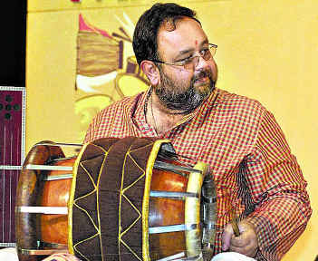

Anoor Ananthakrishna Sharma
 Anoor Anantha Krishna Sharma (born 29 March 1965) is considered as an eminent percussionist (Mridangam) in the whole of India. Hailing from a family of musicians, he started performing at a very early age and has a carved a niche for himself.
As an artist, Anantha Krishna Sharma started performing professionally at the age of fifteen. He has accompanied many reputed artistes such as Dr. R.K.Srikantan, Dr. M. Balamurali Krishna, M. L. Vasantha Kumari, VedaValli, T. V. Gopalakrishnan, etc.
He has traveled across the globe as an accompanying artiste and for conducting workshops.
Anantha Krishna Sharma besides being a prolific Mridangam artist also can play other percussion instruments such as Dolu (Thavil), Tabla, Pakhawaj with the same felicity and with ease. He is also a good Vocalist and a Composer. His talent has been tapped for other non-classical forms of music like light music, film music, folk and devotional, even for ballet and audio cassettes and CD's. He has composed music for many orchestrations and ensembles. His compositions have been regarded as highly imaginative, aesthetically appealing and encompass an amazing complexity and intricacy of rhythm blended in the musical notes.
Some of his performances abroad are: